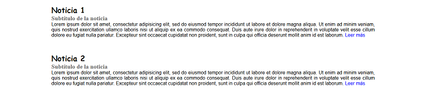
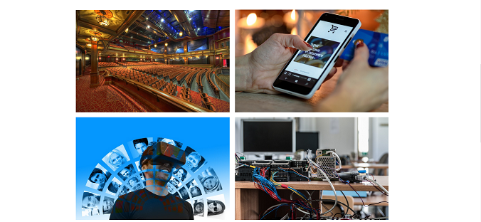

How to use Martindipity.css Framework
First step
Download the latest version of the Framework and open its contents.
You will find several files, which you will use as the basis of work for your landing page.
- CSS - Container folder of the Framework
- IMG - Container folder of the images used
- index.html - Base file for our project
- instructions.html - Help file
Second step
Open in any text or code editor (Notepad, Sublime text ...) the files:
- index.html
- martindipity.css (located inside the "css" folder)
Run index.html in any browser to see the changes as you work.
You can now make the modifications that the framework allows
Third step
Choose between 2 types of configurations, for Header as well as for images, content or footer. You only have to change the code of the label and combine the settings as you like.
It will suffice to change between option a and b of the main parameters:

If you use the "a" option, the result will be the following:
- Header:
- Images:

- Content: 
- Footer:

Si utiliza la opción "b" el resultado será el siguiente:
- Header:

- Images: 
- Content:

- Footer:
Conclusions
Thanks to this tool you can have 56 different combinations of landing page configured in seconds thanks to the two options ("a" or "b") that we put in your hand. Soon the range of configuration options will be extended, so I recommend that you pay attention to the martindipity social networks where the launch announcements will be made.